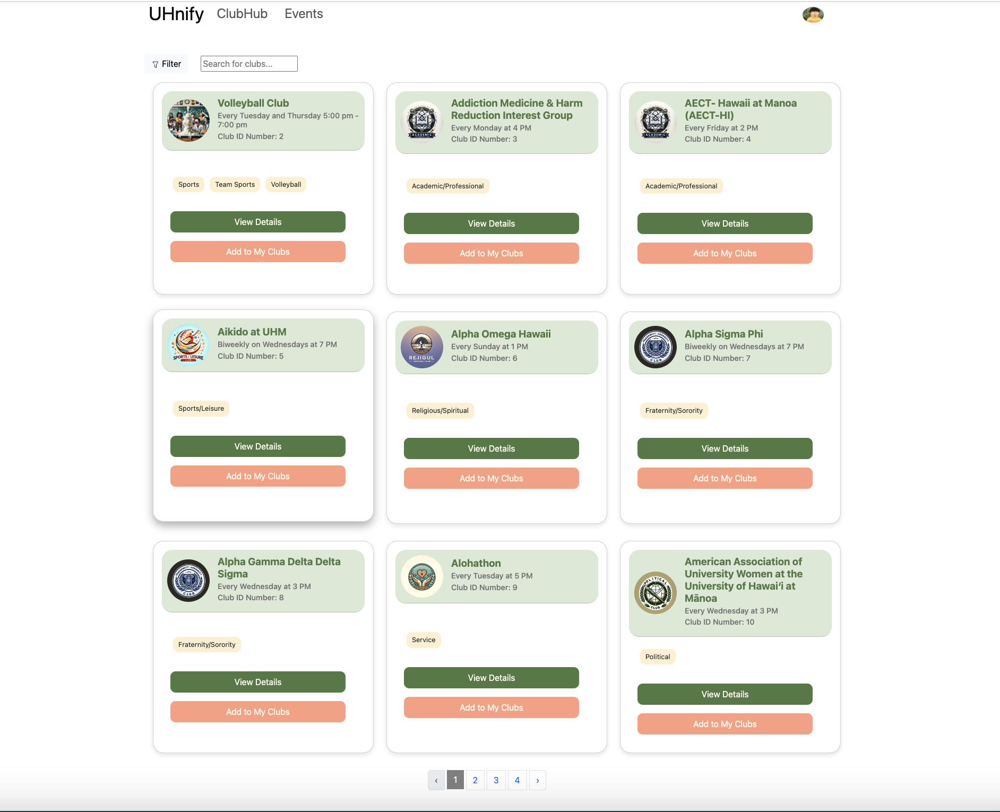

Uhnify is a webapp developed as a final project for the ICS 314 course at UH Manoa. I worked on it with four other people. Our goal was to consolidate as much information as possible about the many clubs on campus. We hoped that by having easier access to this information, students would be able to get more involved during their time at school, build more relationships, and make more memories.
Students would be able to create their own account on the Uhnify site. Once they have an account, students would be able to browse through the different clubs. They would be able to both filter and search through clubs to make finding the perfect one easier. They would also be able to view events associatead with the clubs they are a member of.
I helped with a lot of small things here and there. At the beginning, I made mock-ups of different pages we would need. Near the middle of the project, as my group members started to leverage AI tools such as ChatGPT, I helped debug the code and let them handle the volume. I fixed issues with a few of the pages, such as a form for starting clubs not working, a broken link on the landing page, and adding notifications when users join clubs. I was also responsible for writing the tests, making the homepage, and making sure the site was deployed and working.
AI tools played a big role in our project, and they were both a blessing and a curse. They were blessing because they allowed us to write code at a much higher volume than we could without it. AI tools also helped us find and work with more advanced features of React and Meteor that weren’t covered during the course. They were a curse because we may have used them too much, and that may have made the project much harder than it needed to be. We ended up using ChatGPT for everything, even to create our issues and milestones. This resulted in awkward issues that were either too vague or complex. I remember reading the issues and not even being sure what I needed to be working on or what the goal even was for that milestone. This left the group without a solid direction for a good chunk of the final project. ChatGPT also generated some code that may have been a little too complex for a group of React/Meteor beginners.
Despite a not so great experience with my first software project, I learned a lot about the field. Tbe most important thing I learned was that the practice of software engineering has almost nothing to do with actual code. I remember having this notion at the beginning of the semester that software engineers were these superhuman genius beings who lived and breathed leetcode problems, could sort infinitely long lists in the blink of an eye, and implement the most complex algorithms. That couldn’t be further from the truth. A successful software engineer is really someone who excels at efficiently breaking down problems into smaller chunks. They understand how to set concrete, realistic goals so they have direction and focus. They keep track of what works and doesn’t work and accurately replicate what works to create tried and true processes. I can’t say I had any of these concepts in mind during the project. However, now that I’m aware of them, I can start applying them to future projects. Once I start applying them, I can start replicating and refining them. Here’s a link to the github homepage of UHnify. It contains a link to the working repo where you can view the source code, screenshots of the app, as well as a link to the deployed website.